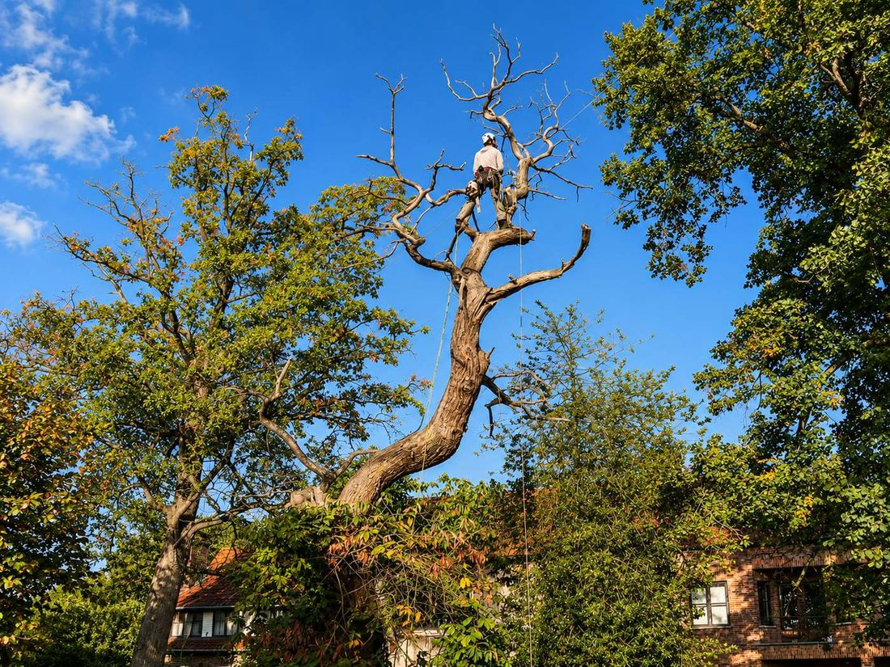
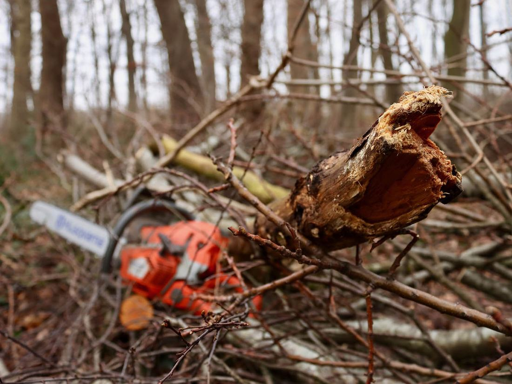
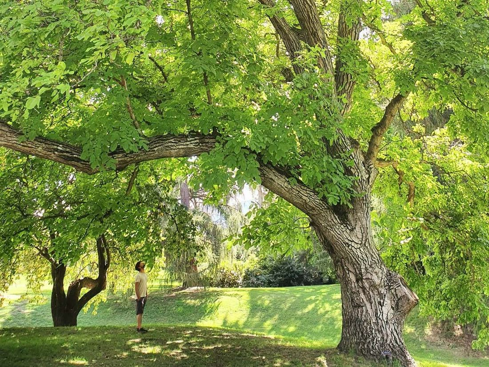
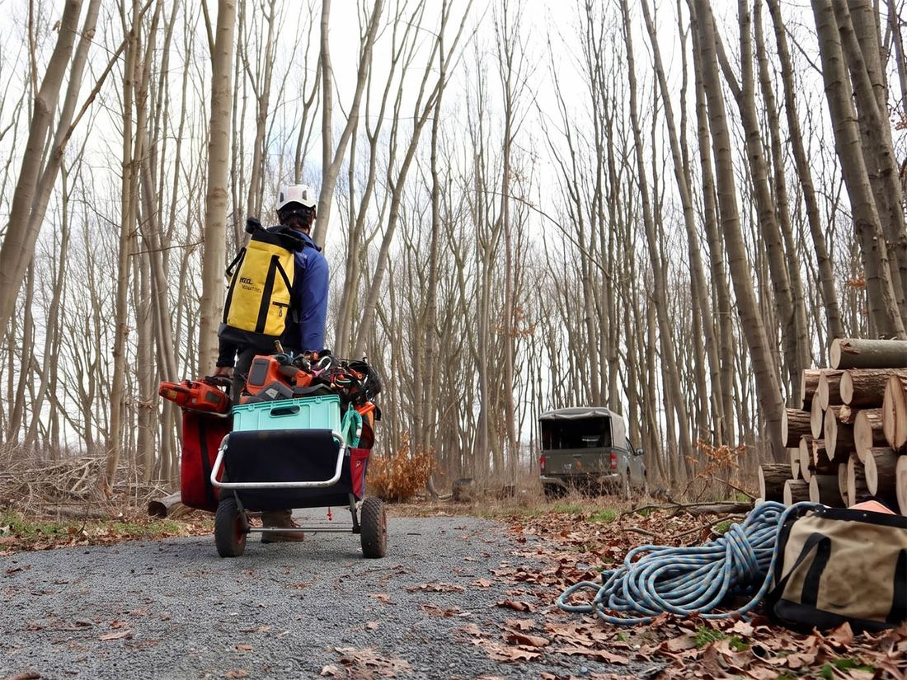
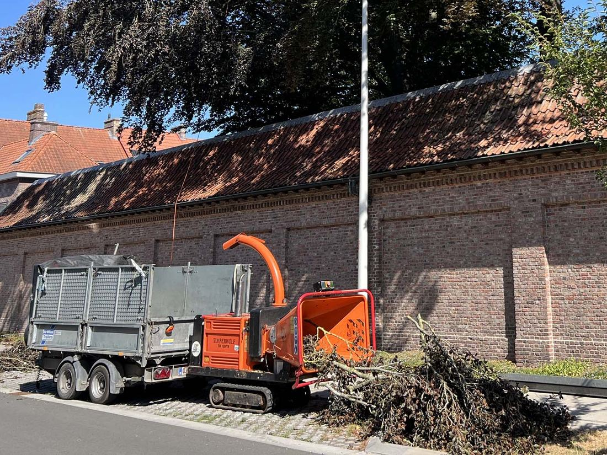
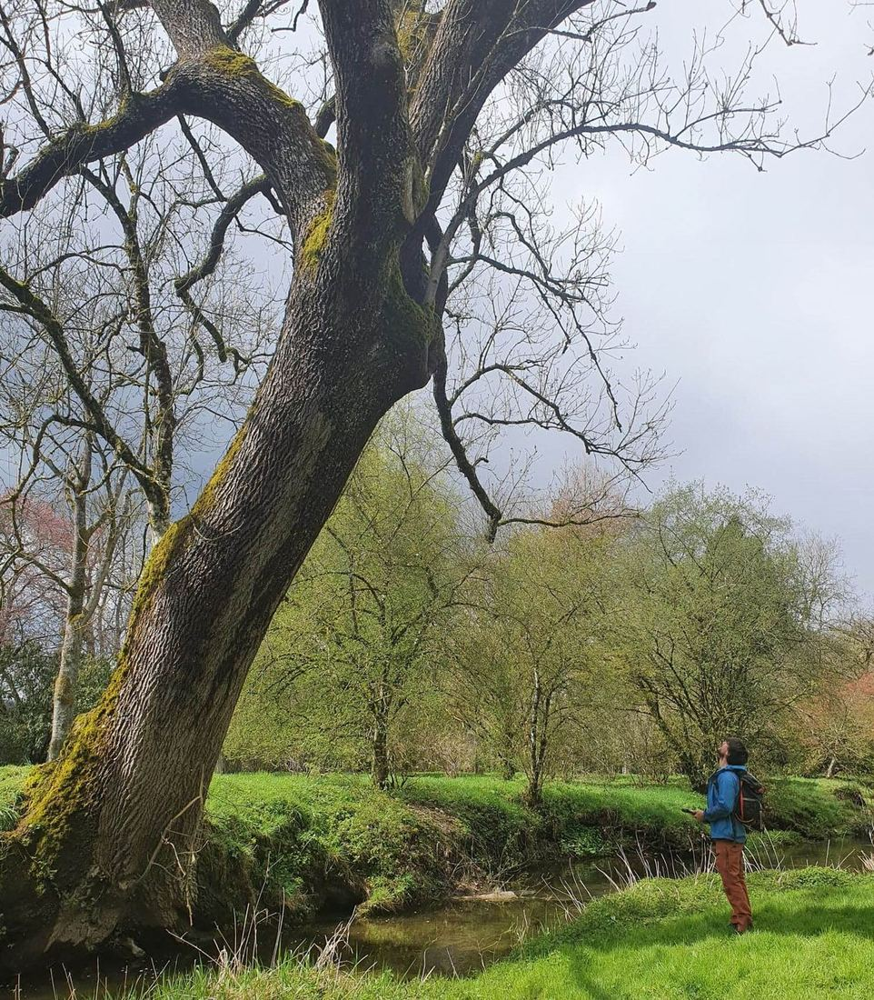

Een transparant gesprek over wat jouw boom echt nodig heeft, daarna de correcte uitvoering.

Elke samenwerking verloopt stap voor stap, altijd in overleg.
Bel, mail of vul het formulier in. Lode reageert snel en vraagt de nodige info op om de situatie in te schatten — zonder dat je meteen een afspraak hoeft te maken.

Lode komt ter plaatse, bekijkt jouw situatie en geeft je een eerlijk oordeel. Ook als dat betekent dat er niets hoeft te gebeuren. Je staat nooit voor verrassingen.

Je ontvangt een transparante prijsopgave. Wat erin staat, is wat je betaalt. Lode legt uit wat er zal gebeuren en waarom — zodat je bewust kan kiezen.

Lode voert het werk zelf uit, waar nodig samen met gelijkgezinde collega's. Hij gebruikt professioneel materiaal en werkt volgens de ETW-normen — veilig voor jou, goed voor jouw boom.

De meest voorkomende vragen over onze werkwijze.
